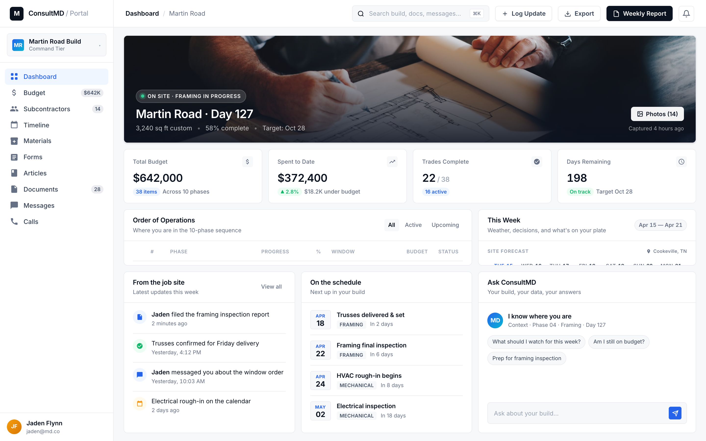
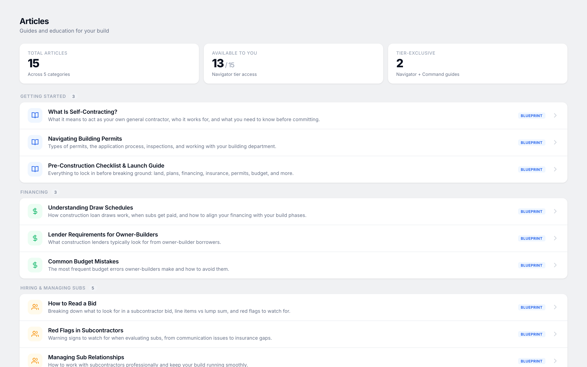
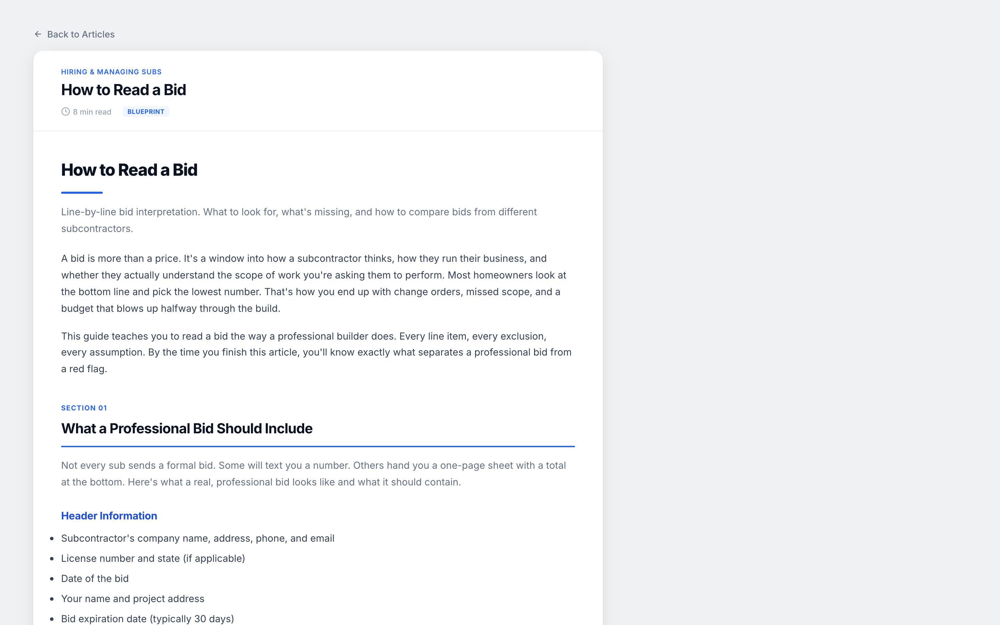
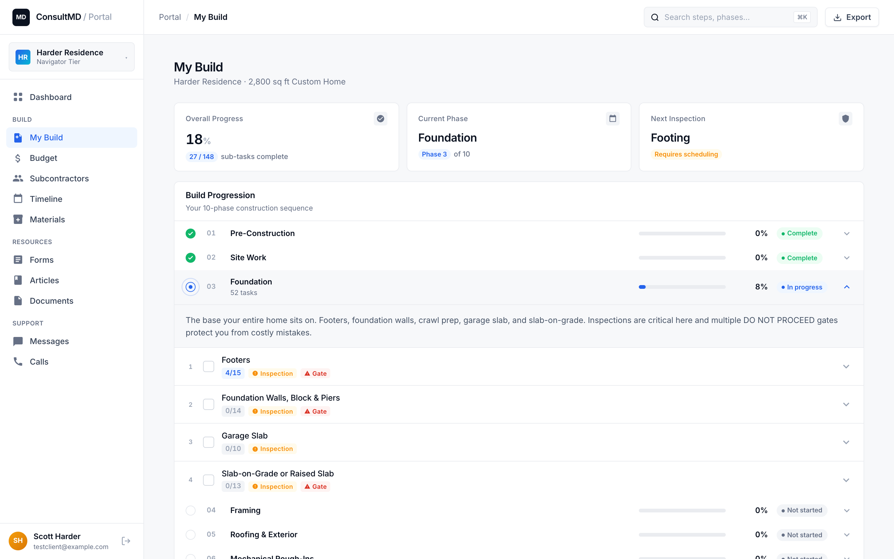
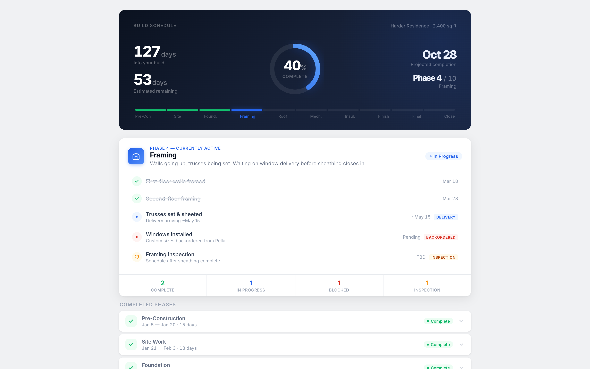
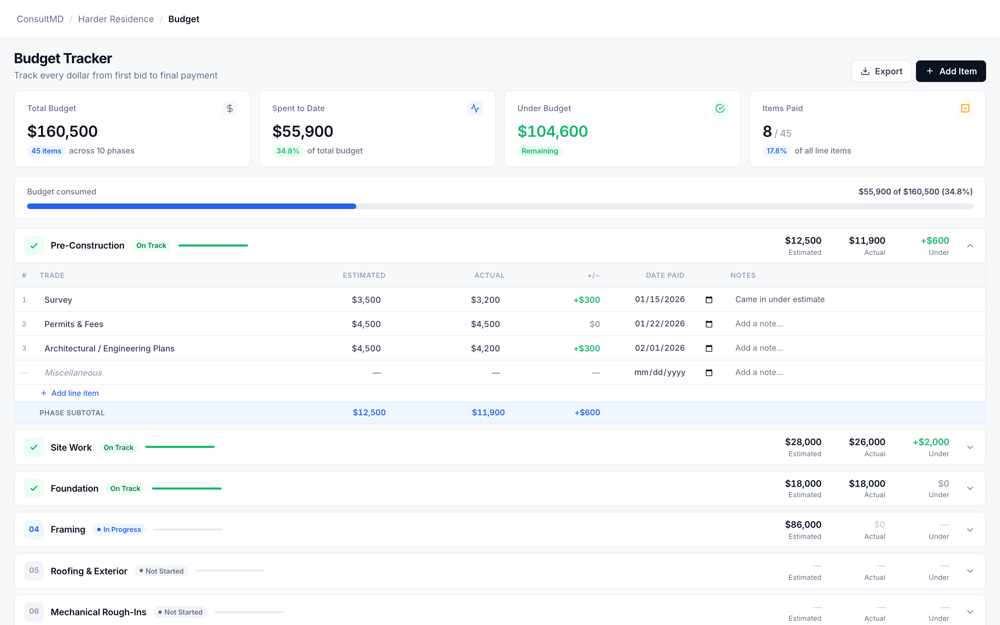
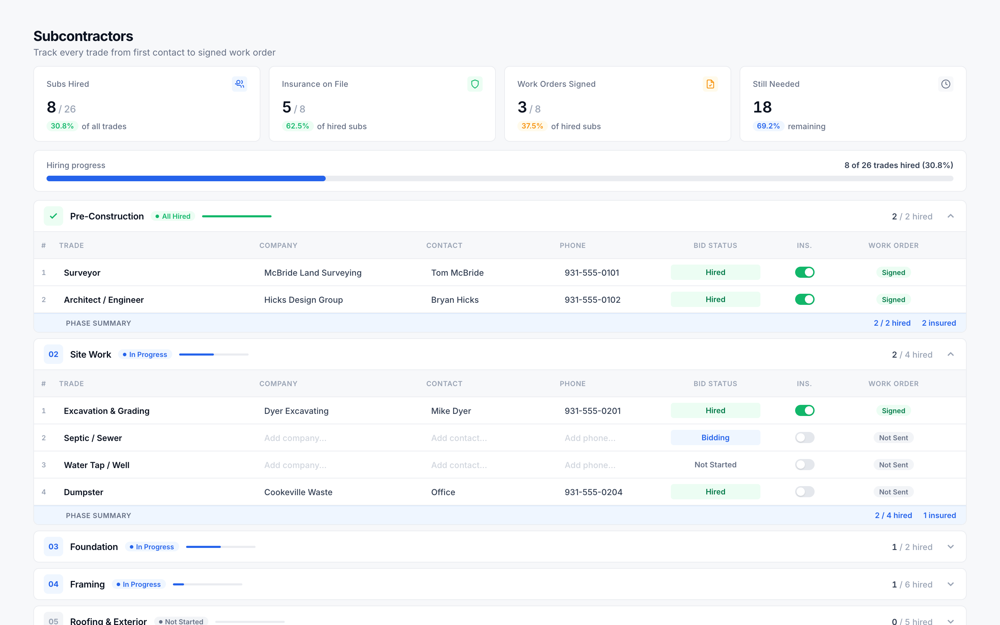
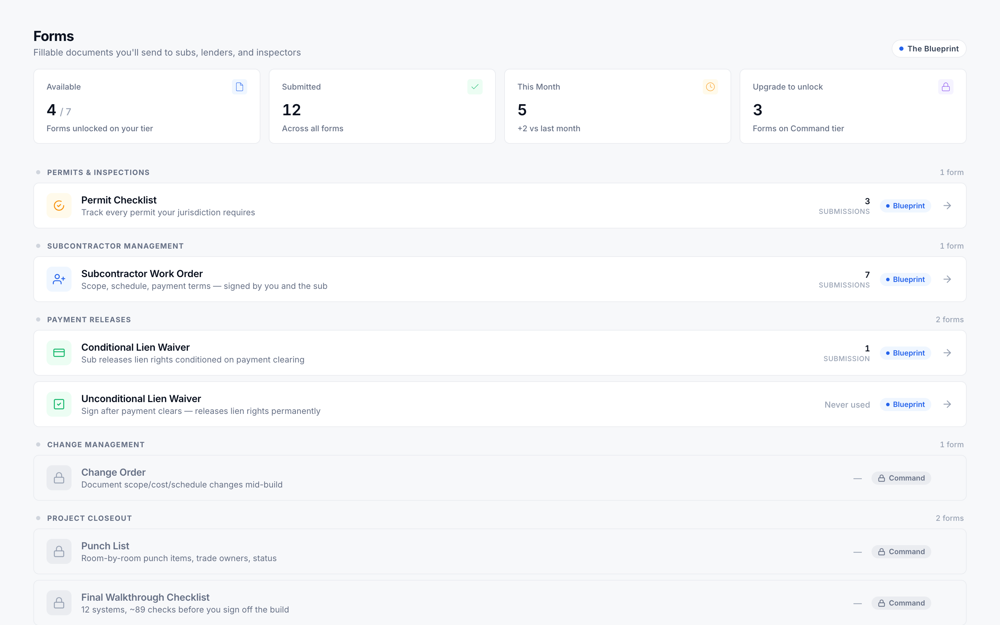

A productized methodology and a portal that scales without limit, built inside an active construction team and designed to teach a generation how to build the right way.
If you only read one page, here it is. ConsultMD is to residential construction what productized education brands are to operators in other industries: a teachable methodology, an offer ladder, and a community that compounds on top of both. We serve three audiences against the same product spine, and we're targeting $5 to $10M ARR by mid-2029 at education-multiple economics.
Cloud-based construction consulting, first to market nationally, built to compete in the productized-education category rather than against project-management software.
Construction consulting has always been a local, relationship-driven business capped at whatever capacity one operator can personally hold. One name, one project, one phone call at a time. ConsultMD takes the methodology behind that work, productizes it, and ships it through a portal, so the same product can serve one customer or a thousand without the operator becoming the bottleneck.
ConsultMD isn't jobsite software, and we make a point of saying so out loud. Procore, BuilderTrend, and CoConstruct already serve working GCs with scheduling, payroll, and multi-project pipeline tools, and they do it well. That category is crowded, it's well-served, and we have no interest in entering it.
We belong in the productized-education category instead. The shape is the same across that category: a teachable system, a community that grows around it, and an offer ladder running from low-ticket entry products up to high-ticket coaching. Businesses built on that shape tend to trade between 6 and 12 times ARR on exit, which is the economic frame ConsultMD is sized against.
| ConsultMD | Procore / BuilderTrend | Productized education | |
|---|---|---|---|
| Sold as | Methodology & toolkit | Jobsite SaaS | Productized education |
| Customer | Homeowners, GCs, new builders | Established GCs | Operators & agencies |
| Price | $5K to $25K + recurring | $50 to $500 / seat / mo | $1K to $50K + community |
| Delivery | Cloud portal + calls | Cloud SaaS | Community + cohort |
| Multiple | 6 to 12x ARR (target) | 6 to 10x ARR | 6 to 12x ARR |
A 3,000 square foot custom home in Tennessee carries roughly $100,000 in general-contractor fee. We package the process so that fee is no longer the line between could-build and couldn't.
A 3,000 square foot custom home in Tennessee carries roughly $100,000 in general-contractor fee, and what that fee actually buys is process: which sub to call when, how to read a bid properly, how to sequence the trades, and what to look for at each inspection. It buys judgment, not labor. For most families, the gap between being able to write that check and not being able to is the difference between "could build" and "couldn't."
Self-contracting homeowners, working general contractors, and aspiring builders. Three audiences against the same product spine. The story shifts depending on who's listening. The portal underneath doesn't.
The same Order of Operations works for all three audiences, the same portal serves them, and the same articles read for all of them. We segment by language and onboarding rather than by product, which means each new audience expansion adds funnel without adding engineering debt underneath.
A single-audience play caps the funnel at a few hundred thousand customers a year, which is fine but not generational. The three-audience play, running against the same product spine, opens the addressable market into the millions. The story shifts depending on who's listening, but the portal underneath doesn't change, and that's where the real operating leverage lives.
Two ladders running off the same methodology. Blueprint and Navigator serve homeowners building one house. The Operator is the standalone pro tier for working GCs and aspiring builders who want a real system installed in their business.
Two ladders running off the same methodology: Blueprint and Navigator serve homeowners building one house, and The Operator is the standalone pro tier for working GCs and aspiring builders who want a real system installed in their business.
Margin tightens as the tier climbs, but lifetime value climbs faster. Blueprint is the entry funnel into the homeowner ladder, Navigator carries the homeowner volume, and The Operator is the standalone pro engagement that converts working GCs and aspiring builders into long-term customers of the methodology.
| Tier | Price | Consultant time | Gross margin | LTV signal |
|---|---|---|---|---|
| Blueprint | $5,000 | ~0 hr | 95%+ | Funnel into Navigator |
| Navigator | $12,500 | ~16 hr | ~70% | Repeat & referral engine |
| The Operator | $25,000 | ~40 hr | ~70% | Standalone pro engagement, 12-mo install, yours forever |
| Add-on call | $500 | 0.5 to 1 hr | ~75% | Margin expansion |
311 sequenced tasks, 11 articles, 16 deliverables, all shipped and refined inside Flynn Development on active jobsites. The Order of Operations is the spine the whole product hangs from.
Every artifact listed below is already shipped, and every one of them has been refined inside Flynn Development on active jobsites. This isn't a roadmap deck. It's an inventory of what's already in the customer's hands today.
Order of Operations is the spine of the whole product, a 311-task sequenced playbook that covers every phase of a custom build from land acquisition all the way through final walkthrough. Each task ties back to the article that explains the why, the deliverable that executes the how, and the tier that unlocks access to both. Everything else in the methodology hangs off this one document.
This isn't theory work. Every article, every deliverable, and every step in the Order of Operations has been pressure-tested on active Flynn Development jobsites. That field-testing is the moat, and it's the one thing nobody starting from scratch can replicate quickly.
ConsultMD is the published methodology of Flynn Development, the residential construction team Jaden and Jason Flynn run. We've more than doubled the business every year for the past four years, and we have eight figures in sales already booked for 2026. The methodology inside ConsultMD is the same playbook running underneath that growth.
Every article in the library was sharpened on a real build, every deliverable was written to solve a real problem the team kept running into, and the Order of Operations itself was reverse-engineered from how Flynn Development actually runs jobs at scale, then productized into something teachable.
The product is positioned as education, methodology, and toolkit, which means it isn't legal, financial, or construction advice. Every article carries the appropriate disclaimer making that clear, and every customer-facing deliverable (work orders, lien waivers, COIs) ships unbranded so it travels properly between homeowner and sub without putting our name on a document we don't control downstream.
The budget tracker is tracking-only, recording estimated, actual, and variance side by side. We never originate a number for the customer, so there's zero liability exposure on the accuracy of any estimate.
The methodology ships against a documented design system: Plus Jakarta Sans display paired with DM Sans body throughout, a light theme for customer-facing fillable forms (so they feel neutral when they land in a sub's inbox), and a darker branded treatment for the educational content. Articles render through a Puppeteer pipeline straight from HTML, and spreadsheets ship from Python with live formulas and conditional formatting baked in. Every output is built to the polish you'd expect from a product that prices in at $25K.
Nine screens captured from the v5 portal. The product is built, the methodology is loaded, and the system is demoable end to end. What you're seeing on the next pages is the platform that ships to the first cohort of operators.
Home base for every build, showing phase progress measured against the Order of Operations, the current week's weather, decisions waiting on the customer's input, and an activity stream that surfaces every message, document, and event tied to the project.

A hero photo of the build, four headline stats (budget, day count, photos, decisions), the phase table with active, queued, and done states, a This Week card combining weather and pending decisions, the live activity feed, the upcoming-schedule strip, and a stub for Ask ConsultMD that opens into the AI layer.
BlueprintNavigatorOperator All three tiers see the dashboard. Decision routing and consultant nudges are gated to Navigator and above.
The methodology, packaged as long-form articles that are phase-tagged, search-indexed, and progress-tracked per customer. Every article ties back into the Order of Operations and links forward into the deliverable that operationalizes whatever it teaches.

Phase filters on the left, search across the top, article cards with read-status badges, a "next up" shelf surfacing the right article for the customer's current build phase, and cross-links throughout to the deliverables and forms each article references.
Blueprint All 11 Tier-1 articles. Navigator adds 3 more articles. Operator adds 4 expert articles and templates on top.
Long-form reading at roughly magazine quality, with inline pro tips and warning callouts woven through the body, linked deliverables that open in a side panel without losing reading position, and progress that saves automatically as the customer moves through.

Reading-position memory, inline media, pro-tip and warning rails alongside the body, the related-deliverable panel that opens in-line, and a next-article funnel that keeps the customer moving through the library in sequence.
Customers don't read long PDFs at scale, but they will read good web pages. The reader is the conversion surface for the methodology itself, which is why we built it instead of just delivering everything as downloads.
The interactive build guide, walking the customer through 48 phase-grouped steps in a two-level accordion. Each step works as a mini-deliverable on its own, with an explanation, links to references, action items, and a completion checkbox, and the page auto-advances to the next step once the current one closes out.

48 rich steps grouped by phase, auto-advance on completion, the Selections feature coming in Q3, and a back-channel that auto-syncs completed steps into the Timeline view so the two surfaces stay in lockstep.
This is the surface the customer opens every morning, making it the portal's stickiest page and the only one that earns daily active use rather than weekly check-ins.
The Order of Operations visualized per build, with milestone tracking, slip warnings when phases run long, inspection windows mapped to phase, and auto-sync coming in from My Build completions. This is where the customer answers "am I behind?" in five seconds instead of half an hour.

A per-build Gantt chart with phase swimlanes, milestone markers, slip warnings on overdue phases, inspection windows mapped to their trades, and a current-day cursor running across the whole view.
Time is the most expensive variable in construction, so we built a surface dedicated to answering whether the build is on schedule or sliding. Customers come here whenever something feels off and need an answer in seconds.
Estimated, actual, and variance laid out side by side, phase-grouped, with live variance percentages that update as the customer enters costs. Tracking-only by design and never estimating, which keeps liability exposure on the numbers at zero. The honest view of where the money is going and where it's leaking.

Phase-level rollups across the whole budget, a dedicated soft-cost section for non-construction line items, a miscellaneous bucket for anything that doesn't fit cleanly, color-coded variance indicators per row, and a one-click Excel export.
The customer enters their own estimates from their own bids, and we just render variance against actual spend as they update. We never originate a number, which keeps estimating liability at zero on our side of the line.
Every sub on the build, with their trade, contact info, insurance status, work-order status, and current bid status all in one row. This is the single source of truth on who's doing what and, more importantly, who hasn't returned the COI yet so the customer knows exactly which person to chase.

Trade-grouped sub list with status pills for insurance and work order, current bid status per sub, one-tap contact actions to text or call, and COI document attach right inline with the row.
NavigatorOperator Full tracker for both. Blueprint customers get the spreadsheet version of the same data.
The connective tissue of the build. Work orders the homeowner fills out first and then sends to the sub, conditional and unconditional lien waivers covering both sides of payment, and a material ordering tracker tied to real lead times pulled from suppliers. Every operational artifact a build needs lives here, all of it unbranded so it travels cleanly between parties.

Work Order, COI request, Conditional Lien Waiver, Unconditional Lien Waiver, Change Order, Punch List, and Final Walkthrough Checklist. All of them fillable and all of them unbranded.
Twenty-two pre-loaded items spread across five ordering phases, with a status dropdown that runs from Selected through Installed. It's the operational companion to the Material Lead Times article.
A custom AI built into the portal, trained on the methodology and indexed on the customer's build. Available across every tier of the product. At the Operator level, installable inside the operator's own business.
ConsultMD ships with a portal-embedded AI assistant trained on the full methodology, every article in the library, and the customer's own build data. It isn't a wrapper on top of generic ChatGPT. It's a custom assistant that knows the difference between a footing pour and a slab pour, and between a draw schedule that protects margin and one that doesn't.
The admin platform that lets us scale to hundreds of clients without losing the white-glove feel. Multi-consultant scoping, a health-score engine, and an inbox that surfaces attention-needed clients automatically.
The bottleneck for any consulting business is the number of people you have managing clients. The Operator Platform is the admin side of ConsultMD, a multi-consultant command center designed to scale to hundreds of active clients at once without losing the white-glove feel that makes the product worth paying for in the first place.
Every active client carries a computed health score from 0 to 100, recalculated on read so it always reflects current reality. Penalties stack across SLA breaches, stalled builds, low call usage, budget overruns, and prolonged inactivity. The operator dashboard surfaces attention-needed clients automatically, so clients stop falling through the cracks between consultant check-ins.
$5 to $10M ARR by mid-2029 at education-multiple economics. We're targeting a $30M+ exit at standard comps. Every product, partnership, and capital decision gets measured against that outcome.
A category-creating education business sized to land at education-multiple economics inside a three-year window. We're targeting a $30M+ exit at standard comps, and every product decision, partnership conversation, and capital decision gets measured against that outcome.
SaaS multiples reward retention above almost everything else, whereas education multiples reward audience, brand, and methodology IP. ConsultMD is fundamentally a transactional product with a recurring layer sitting on top, not a recurring product with transactional add-ons, and that distinction is what puts us in the productized-education comp set rather than the construction-tech category. The two categories trade at very different multiples on exit, and the difference matters.
| Stream | Units / yr | ASP | Revenue |
|---|---|---|---|
| Blueprint | 750 | $5,000 | $3,750,000 |
| Navigator | 200 | $12,500 | $2,500,000 |
| The Operator | 50 | $25,000 | $1,250,000 |
| Total | $7,500,000 | ||
Alternatively, the recurring community layer alone carries 30 to 40% of that target at $97/mo across roughly 2,500 members ($2.9M).
The business is already profitable on a per-customer basis today, so ConsultMD doesn't actually require capital to operate. What capital does is compress the time it takes us to get to scale, and the three places dollars compound fastest are paid acquisition, the consultant-platform build, and the distribution-partner push. Any equity conversation gets sized against time compression, not survival.
How each tier behaves at the unit level, and how that picture shifts once the recurring community layer ships in Q4 2026.
| Tier | ASP | Gross margin | What drives the margin |
|---|---|---|---|
| Blueprint | $5,000 | 95%+ | Digital delivery, near-zero marginal cost per sale |
| Navigator | $12,500 | ~70% | 16 consultant hours plus 48-hr email and text support |
| The Operator | $25,000 | ~70% | 12-month JobTread + methodology install, coaching, training |
| Add-on call | $500 | ~75% | Single billable session, no support overhead |
| Community (planned) | $97/mo | ~90% | Recurring, near-zero marginal cost per member |
Today the acquisition channel mix is organic, referral, and founder-led sales, so CAC is effectively zero on the first cohort. We haven't tested paid acquisition for ConsultMD yet, and the Q3 2026 push is what will establish the real number. Our reference point is custom-home acquisition at Flynn Development, which runs between $800 and $1,250 per closed customer. ConsultMD's CAC could land in that same range, or come in materially lower because the product is digital, the price point is approachable, and the buyer doesn't have to trust us with their house before they can transact.
Four layered moats that compound on top of each other rather than overlapping. Operator credibility, three-audience expansion, category creator advantage, and distribution partnerships in flight.
Methodology businesses are hard to copy not because the methodology itself is hard to clone (it usually isn't), but because the credibility behind it is what's actually hard to build. ConsultMD stacks four layered moats that compound on top of each other rather than overlapping.
The next twelve months are sequenced and underway. Three kinds of conversations we're open to: equity partners, distribution partners, and operator intros from founders of education-multiple companies.
Sequenced to compound, with each block building the foundation for the next one. None of what follows is speculative; every item is either in active build right now or specced out in a build plan ready to start.
We're not raising blind capital. What we're looking for is a specific shape of partner that compresses the time to a $5 to $10M ARR business, and there are three different conversations that could deliver that. Here's what each one looks like in practice.
Reach out anytime. The portal is live and demoable end to end today, the numbers in this brief defend themselves in about thirty minutes of conversation, and the next twelve months are already sequenced and underway.
A category-defining construction consultancy built inside an active construction team. The portal is demoable today, the methodology is already shipped, the next twelve months are capitalized, and we're open for the right conversations.
This brief is a snapshot in time. The portal evolves weekly.